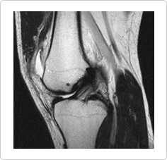

The posterior cruciate ligament is usually damaged by the femoral regionmoving backward towardsthe back legs when a person falls over and hitstheir knees on the ground. In particular, the ligaments are torn out by people being in a sitting position when involved in a car accident.